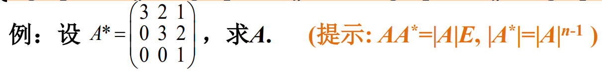
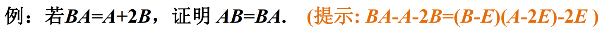

线性代数问题分类
一、行列式问题
1、利用行列式展开式
方法：M41+M42+M43相当于−A41+A42−A43+0A44，也就是把行列式的最后一行替换为(-1,1,-1,0)，然后计算行列式的值即为答案
方法：由于不同行元素与代数余子式内积为0，(1,2,0,-4)·(6,-x,19,-2) = 0，直接算出x即可
2、利用递推式、分裂式、行列递加递减、行列全加、范德蒙行列式
方法：可以将整个行列式按第一列展开，就可以得到：Dn=(a+b)Dn−1−abDn−2，把这个式子稍微移项一下就可以得到Dn−aDn−1=b(Dn−1−aDn−2)，也就等于bn。然后就可以得到Dn−Dn−1的递推式，然后把Dn−1、Dn−2等一项一项展开，就可以得到最后的式子。
PS：最后一步an+an−1b+...+abn−1+bn=a−ban+1−bn+1是一个固定结论，直接记住就行。如果记不住的话在计算Dn通项公式时可以用待定系数法去推
3、利用消去作用
方法：消去作用：当A=AT时，A旁边乘以一个AT就可以将这个A变为E。
这里使用一个正交矩阵中重要的式子AT(A+B)BT=(A+B)T，然后两边同时取行列式即可解出
4、利用和差化积
方法：求两个矩阵的和的行列式，需要将其化为积的行列式。可以提取公因式。其中B可以看出A经历线性变换后的矩阵，因此等于A右乘一个矩阵，记为C。因此B=AC，将B换成AC就出现了公因式，就可以变为|A||E+C|。其中A的行列式可以通过B=AC取行列式求出。
5、利用A*
方法：求余子式之和就可以求出它的伴随矩阵，然后把伴随矩阵的每个元素求和即可。利用A∗=∣A∣A−1，先把逆矩阵求出来，就可以求出伴随矩阵。
6、利用块三角行列式简化
方法：由于这并不是一个块三角行列式，但是很像。我们可以把上下很长的A拆成上下两部分A1和A2，A1是一个n*n的矩阵。同时把O也拆成上下两块。最后就可以变成⎝⎛A1A2EnOOBT⎠⎞，然后可以把下面的A2、En看成一个方阵，把O、BT看成一个方阵，就可以把行列式表示成∣A1∣∣∣∣∣∣OBT∣∣∣∣∣，也就是0
二、向量和矩阵问题
1、利用矩阵标准型分解

方法：C就是ABT只取前面K项，也就可以写成Adiag(Ek,O)B，即Adiag(Ek,O)A−1，因此C2=C，然后从这个式子可以得到CA=Adiag(Ek,O)。由C相似于有对角线有k个1的对角矩阵，就可以得到r©= k，所以Cx=O的基础解系有n-k个向量。我们只需要找到n-k个线性无关向量，使得AC = θ即可。由于Adiag(Ek,O)，我们就可以直接取从ek+1到en的所有向量，最后算出来确实是θ。它们就是基础解系
2、利用矩阵/向量关系


方法：碰到A*，第一个需要想到这个式子：AA∗=∣A∣E。因此A=∣A∣(A∗)−1，算出A∗的逆矩阵以及A的行列式即可
3、利用特殊值
方法：既然要利用特殊值，就取ξ分别等于ei和ei+ej。前者算出来每个对角线元素为0，后者算出来aij+aji+aii+ajj=0，再利用对角线元素为0代入就可以得到aij=−aji
4、利用吸收作用和消去作用
方法：吸收作用：A乘以一个A后不变。首先把A和B代入右边的式子就可以得到AB+BA=O，然后使用消去作用，分别对这个式子左乘一个A和右乘一个A，就可以得到下面两个式子：AB+ABA=O和ABA+BA=O，两式相减就可以得到AB=BA，结合之前的结论就可以得到AB=BA=O
5、利用秩的关系

方法：一般涉及到两个秩相加的不等式就是两个：r(A + B) <= r(A) + r(B)，以及r(AB)>=r(A) + r(B) - n；同时我们注意到r(A) = r(-A)，所以r(-A) + r(E-A)使用第一个不等式可以得到式子>=n，然后利用第二个不等式可以得到式子<=n（A(E+A)是零矩阵）。结合这两个不等式可推出=n。

方法：MNT包含在NTM之中，我们可以列出一一串NTM的式子，从中取出两个A。首先我们需要知道：一个式子的项数越多，它的秩越可能小。因此单个矩阵M的秩肯定是最大的，它也小于等于r。但是这里给出了NTM不为0的条件，这直接使得一个很长的式子也能保持满秩。也就是利用这一点，这个不等式得以成立。
6、利用和差化积

方法：需要知道的是：给定一个矩阵相关的等式（不超过两次），大部分情况下就都可以从中找到一对互为逆矩阵的矩阵。（通过移项、提取公因式就可以和差化积，因式分解）。总之我们可以得到(B−E)(A−2E)=2E，因此21(B−E)与A−2E互为逆矩阵。这个结论很重要的一点就是双方可以交换顺序，即：(B−E)(A−2E)=(A−2E)(B−E)，将这个式子拆开就是结论。
方法：还是使用和差化积，将AAT+BBT看成两个矩阵的积。因此可以看成(A,B)和(ATBT)的乘积。然后将(A,B)看成CT，就相当于要证明r(CTC)=r(C)。这是一个比较经典的题目，可以看成证明CTCx=O与Cx=O同解。后退前可以直接出来，前推后可以式子左乘一个xT
7、块初等变换
方法：对(ACBD)这个矩阵整体进行块初等变换，用第一行左乘CA−1加到第二行，就可以变成(AOBD−CA−1B)。然后得到行列式的值为∣A∣∣D−CA−1B∣=∣AD−ACA−1B∣，利用题目给的条件就可以推出结论
8、向量组相关、等价问题
方法：首先证明向量组线性无关可以使用定义，因此构造方程(t1α1+t2α2+t3α3)+(s1β1+s2β2)=θ，然后为了利用这个正交，我们需要把(t1α1+t2α2+t3α3)和(s1β1+s2β2)单独看成两个向量α和β。由于这两个向量正交，所以想要让这两个向量相加之后等于θ，只能让它俩同时等于θ。因此就意味着(t1α1+t2α2+t3α3)和(s1β1+s2β2)分别等于0，这样就可以利用两个向量组线性无关得出所有系数全部为0的结论。
方法：还是利用向量组无关的定义，设t1α1+t2α2+...+tnαn=0。我们会发现，当i大于等于n的时候，Aαn=0，因此我们可以通过这种刚刚的式子整体左乘一个An−1来将等式中所有i大于等于2的项变为0，最后就剩下t1αn=0，就可以得到t1 = 0。同理，可以左乘一个An−2得到t2 = 0，以此类推，最后就可以得出所有的t都等于0，就证明了线性无关
方法：两个向量组等价，说明它们可以互相表示。因此，(α1,α2,α3)就应该可以表示(β1,β2,β3)，反过来也如此。所以我们就是要找三个β向量中有没有α无法表示的向量，以及反过来。所以我们的做法是：先按顺序按列放置α1,α2,α3,β1,β2,β3，然后将其化成行简化梯形。找出其中后三列中存在出现首1元素的列。这个列对应的β向量就是α向量组无法表示的向量。同理，也可以找出β向量组无法表示的向量。找出这两个向量之后，我们只需要将它们加起来，就是最后要求的向量。
9、利用多项式公式
方法：需要凑出一个式子，使得它乘以E-A可以变为E。我们注意到当我们把E−A乘以一个A时，就可以变成A−A2，两者相加就可以消去A。同理，我们也可以进一步在原式中乘以一个A2，就可以消去A2。利用这一点，我们可以一直乘，直到式子中剩下E−Ak，然后由于Ak = 0，所以最后的式子就是E。这样就找到了这个式子
10、计算
方法：对于A，可以通过找规律的方式；对于B，可以看出两个向量αβT相乘。然后n次方就是α(βα)n−1β，由于(βα)n−1是一个数，因此就可以化简
方法：M的左边的初等矩阵可以看成把第一行乘以2加到第二行，执行一百次（也就是把第一行乘以200加到第二行）；右边的初等矩阵可以看成交换第1、3行，交换99次（就相当于只交换一次）。简单计算即可得出答案
方法：还是需要将A对角化。我们选择找出A的两个特征向量，来确定对角矩阵元素。首先，我们发现A的每行的和都是1，因此可以通过特征值的定义法，让特征向量等于(1,1)T，就可以得到第一个特征值为1，然后第二个特征向量可以通过∣A∣=λ1λ2这一公式代入刚刚求得的特征值得到。这样就可以将A对角化为Pdiag(1,1−a−b)P−1,然后我们取极限，就相当于对每个对角元取n次方的极限。1还是1，而1-a-b在(-1,1)区间内，变成了0。所以最后就变成了Pdiag(1,0)P−1，计算即可
三、方程组问题
1、常规方法(初等变换)
方法：取增广矩阵，化为行简化梯形，分类讨论。需要分类的地方就是参数所在的元素是否为0。注意：如果涉及到用字母消去常数项、字母加减字母等复杂情况，宁愿出现分母也不要出现二次方！（期中的惨痛教训）
2、利用关系式

方法：我们需要先确定基础解系有几个向量。首先可以知道的是r(A) = n-1（A∗不为O说明存在n-1阶子式非零，同时A的秩又小于n）。所以利用r(A)+r(N(A)) = n可以求出基础解系有一个向量。所以我们只需要找一个非零向量满足Ax=θ即可。同时，之前说过出现与A∗有关的式子就要想到使用AA∗=∣A∣E,这里就会发现等于0，所以A∗的列向量就是方程组的解。所以我们找一列A∗中的非零列作为通解即可。
方法：(AT,N)的秩即为(ANT)的秩，而它的秩为n说明(ANT)x=θ只有零解。首先这个方程的解是Ax=θ和NTx=θ的解的交集。而Ax=θ的解可以表示为基础解系向量的线性组合，即Ny。所以我们需要找出在x=Ny的情况下满足NTx=θ的解。代入就会发现：NTNy=θ。这个方程与NTy=θ是同解的（下一题就是证明），而由于N作为一个基础解系，它里面的向量是线性无关的，所以NTy=θ的解只有零解，即y = θ。因此x就也等于θ，所以(ANT)x=θ整体也只有零解。
方法：就是证明当Ax=0时也满足ATAx=0，并且反过来也成立。前推后很容易，后推前只需要在ATAx=0左乘一个xT，就可以得到(Ax)T(Ax)=0，所以Ax=0
方法：当看到两个矩阵秩相等时，就需要联想到方程组的关系。这里就说明ABx=θ和Bx=θ同解。然后我们现在为了推出秩相等，需要证明的就是ABCx=θ和BCx=θ同解。设ABx=θ的解为y，那么只需要将Cx视为y，就可以发现它们的解都是满足Cx=y的x，而由于刚刚两式同解，两个方程Cx=y的y是相等的。因此它们是同解的。
3、利用解的组合
方法：首先要寻找特解。由于Aη1、Aη2、Aη3都为b，所以A(η1+2η2)=A(2,3,4,5) = 3b，A(η2+η3) = A(1,2,3,4)=2b。而我们将其相减，就是A(η1+η2-η3) = A(1,1,1,1) = b。所以我们找到了一个特解为(1,1,1,1)。然后找通解。通过矩阵的秩可以确定基础解系只有一个向量。而我们可以用相同的方法找出Ax = θ的一个解，也就是A(3(η2+η3)-2(η1+2η2)) = A(3(1,2,3,4)-2(2,3,4,5)) = θ，就可以求出通解。
4、利用等价问题
方法：这两个式子有非零公共解等价于(AB)=θ有非零解。因此需要证明它的秩小于n。这里需要使用一个技巧，可以证明r(AB)≤r(A)+r(B)：r(AB)≤r(ABOB)=r(AOOB)=r(A)+r(B)。然后代入就可以得到秩小于n。
方法：首先是前推后：可以利用同时小于等于和大于等于r(A)实现。首先r(A,B)本身大于等于r(A)，然后利用和差化积，把B = AC代入即可得到r(A,B)=r(A,AC)=r(A(E,C))≤r(A)，因此就证明成功。然后后推前：其实r(A)=r(A,B)就意味着B中的每个列向量都是可以通过矩阵A中的不同线性组合得到的，也就可以转为B中每一列对应的方程组有解来处理。首先我们可以将B拆成不同的列向量bi。就可以根据不等式得到r(A)≤r(A,bi)≤r(A,B)，而条件告诉我们r(A,B) = r(A)，因此r(A,bi)=r(A)，也就说明了对于每个i，Ax=bi 这个方程组有解。因此我们可以把方程组的解的列向量排在一起，就形成了C，并且AC = B。
方法：就是需要找出A(α1,α2,α3)=O式子中的A。我们可以使用转置的方法将A放到后面：(α1,α2,α3)TAT=O，也就是求出(α1,α2,α3)Ty=θ的基础解系，将列向量排列起来就是AT
5、反证法
方法：可以使用反证法。首先题目给的条件的意思就是：对于每一行，处于对角线上的元素的绝对值肯定比这一行上其他元素的绝对值的和还大。然后我们 假设A不可逆，就说明Ax=θ有非零解。我们只需要找到一行，使得这个式子肯定不成立就行了。我们发现，如果一个对角线元素乘以了一个很大的数，并且这一行上的其他元素如果只乘以一个小一点的数，再求和，仍然不可能比对角线乘以数字后的值大，也就说明，一个解向量不能让这一行中处于对角线的元素乘以一个绝对值比这一行中其他元素所乘的数的绝对值都大的元素。意思就是当这个解向量乘以A中的某一行时，假如这一行的第i个元素是位于原矩阵的对角线上的，那么解向量中的第i个元素就不能是整个解向量中绝对值最大的元素。但是，A中的全部行都需要乘以这个解向量，而这时向量中的元素都可能位于原矩阵的对角线上。因此也就意味着，解向量中每个元素都不能是绝对值最大的元素。这很显然不可能，因为所有元素中肯定至少有一个绝对值最大的元素。因此矛盾。写出来的过程就是：假设解向量中的第i个元素的绝对值是最大的，那么我就让解向量乘以第i行，这个时候解向量中位于对角线的元素乘以了一个解向量中绝对值最大的元素。列出等式就是：−aiixi=ai1x1+...+ainxn，然后两倍取绝对值：∣aii∣∣xi∣≤∣ai1∣∣x1∣+...+∣ain∣∣xn∣，然后在把每个xk放大到xi，所以原式≤∣ai1∣∣xi∣+...+∣ain∣∣xi∣=∣xi∣(∣ai1∣+...+∣ain∣)，两边消去一个xi，就会发现推出了一个与条件矛盾的结论，所以假设不成立。

方法：要证明两个秩相等，我们就可以考虑证明两个方程组Anx=θ和An+1x=θ同解。前推后(Anx=θ推An+1x=θ)很好推，后推前需要使用反证法。假设Anx=θ，那么我们就可以用之前的方法（假设k0x,k1Ax,...,knAnx = 0，等式左右分别每次乘以An,An−1...E），就可以推出x,Ax,...,Anx是线性无关的。但是这个向量组的个数达到了n+1，超过了向量的维数n，因此这是不可能的。所以假设不成立。因此两个方程组同解，秩相等。
6、利用r(A) = r(A,B) = r(B)，则A，B的列向量组等价
方法：前推后：我们为了推出(A,β)和(B,γ)行向量组等价，我们需要先推出A、B行向量组等价。由两个方程组同解，我们可以推出两个齐次方程也同解。所以Ax=θ,Bx=θ,(AB)x=θ都同解，因此A与B的行向量组等价（拥有相同的极大无关组）。知道了这一点后，很关键的一点就是：可以设B=PA。（这是因为B的行向量可以由A的行向量经过线性组合后得到，也就相当于A进行初等行变换，相当于左乘一个可逆矩阵P）。通常这个P的使用方法是在已知的式子中去左乘。因此我们在Ax=β中左乘一个P，得到PAx=Pβ，也就是Bx=γ。由此我们就得到了Pβ就等于γ。然后我们整体得到：P(A,β) = (B,γ)，也就证明了行向量组等价。
后推前：相当于把刚刚的逻辑反过来。由两个行向量组等价，可以得到P(A,β) = (B,γ)（P可逆），也就是PA=B和Pβ=γ，然后我们就去证明两方程组同解。假设存在x满足Ax=β，那么也是左乘一个P，得到PAx=Pβ，即Bx=γ。而假设存在Bx=γ，只需要左乘P逆，也可以得到结论。所以两个方程组同解。
四、特征值问题
1、利用Aξ = λξ，|λE-A| = 0，(λE-A)ξ = θ等公式
方法：我们还是需要先计算出特征多项式∣λE−A∣=∣∣∣∣∣∣∣∣∣λadcb−bλ−adc−c−bλ−ad−dc−bλ−a∣∣∣∣∣∣∣∣∣，然后将其可以分块为∣∣∣∣∣CDDC∣∣∣∣∣，然后第二列加到第一列，第一行乘以-1加到第二行，就变成了∣∣∣∣∣C+DDOC−D∣∣∣∣∣，也就等于|C+D||C-D|，然后平方差公式因式分解就可以得到答案。（注意，a2+b2因式分解时需要将其变成a2−(ib)2，就可以使用平方差公式）。
方法：对于一个矩阵想要将其各行的元素和提取出来，可以构造一个全1列向量，然后右乘，就可以得到一个各元素为各行的元素和的向量。
2、利用f(A),A−1,A∗有相同特征向量，有特征值f(λ),λ−1,∣A∣/λ
方法：可以找出B与矩阵A直接的关系。从这个式子可以得出(A-E)B=E，说明B是A-E的逆矩阵。因此B的特征值为(λ−1)−1
方法：首先可以将矩阵的式子转换为特征值的式子，即λ3+2λ2=O，可以得到λ = 0或-2，并且这两个就是A的全部特征值（记住：通过一个矩阵多项式等式求出来的特征值就是A的全部特征值）。同时注意到r(A)=2，而矩阵的秩就是矩阵非零特征值的个数，因此-2是二重特征值。（注意，不能因为λ2=0就认为0是二重特征值，因为这根本就不是特征方程|λE-A|=0）
3、利用特征值特征向量的性质

方法：使用反证法，假设α+β是特征向量，那么设A(α+β) = λ3α+λ3β，同时也等于λ1α+λ2β，两式相减(λ3-λ1)α+(λ3-λ2)β = 0，由于α和β是属于不同特征值的特征向量，它们是线性无关的，所以只有零解，所以三个特征值相等，产生矛盾
方法：可以先把β的式子代入，然后将Aα替换为λα，最后会得到一个等式 (λ13−λ1)α1+(λ23−λ2)α2+(λ33−λ3)α3=0，由于三个特征向量属于不同特征值，线性无关，因此得到了三个特征值都满足λ3−λ=0，所以特征值分别为1，-1，0。然后就可以说明A相似于对角矩阵B = diag(1,-1,0)。同时，由于A的多项式也相似于B的多项式，因此A-E也相似于B-E。故A-E的秩为B-E的秩，即diag(0,-2,-1)，可以看出有两个非零对角元，因此秩为2。同理，A+2E也相似于B+2E，可以直接求出B+2E，即diag(3,1,2)的行列式。
方法：首先这是一个实对称矩阵，说明它的不同特征值的特征向量相互正交。因此我们可以直接求出与目前已知的特征向量正交的两个向量。方法就是设向量为x，求(0,1,1)x=0的基础解系。求出来两个向量分别就是两个属于1的特征向量。然后再根据特征向量的定义，得到A(α1,α2,α3)=(−α1,α2,α3)，就可以求出A=(−α1,α2,α3)(α1,α2,α3)−1
4、利用相似矩阵有相同的特征值、多项式

方法：可以从B看出A的特征值为0，1，2，然后直接写出A的特征多项式，让它等于0，解三个方程，即可求出
方法：三个式子不可逆，意味着对这三个式子取行列式都为0。我们可以发现这几个行列式可以化为|λE-A|=0的形式，也就可以求出A和B的三个特征值。然后题目需要求的其实就是A∗的对角线元素和，也就是它的迹，就等于A∗特征值的和。而A∗的特征值就等于|A|/λ，而|A|即为A的特征值的积。由此就可以求出。
方法：需要计算出与A相似的矩阵。由于A3ξ可以使用Aξ和A2ξ表示，因此(ξ,Aξ,A2ξ)整体左乘一个A后仍然可以使用(ξ,Aξ,A2ξ)表示，所以就可以得到A(ξ,Aξ,A2ξ)=(Aξ,A2ξ,3Aξ−2A2ξ)=(ξ,Aξ,A2ξ)⎝⎛01000103−2⎠⎞，所以A和这个系数矩阵相似，记为B。所以A+E也与B+E相似，也就可以通过求B+E的行列式来求A+E的行列式
方法：与之前不一样，需要找到与A合同的矩阵。这里A可以表示为(β,γ,α)⎝⎛αTβTγT⎠⎞，然后左边的(β,γ,α)可以表示为(α,β,γ)⎝⎛010001100⎠⎞,所以整体A就变成了PBPT的形式，A合同于B。由于这个矩阵P也是一个正交矩阵，所以A与B之间也是相似的。两个相似矩阵之间的特征值是相等的，所以就可以求出|A|以及tr(A)，分别为特征值的积和和。
5、对角化问题
方法：2为二重特征值说明|2E-A|x=0的基础解系个数为2，也就说明r(2E-A) = 1，因此我们只需要将2E-A表示出来，化为行梯形矩阵，并让它的秩等于1，算出参数的值即可。
方法：判断两个矩阵是否相似就是判断两个矩阵对角化后的对角矩阵是否相同，也就是判断两个矩阵的特征值是否相等。所以求出对角矩阵C，发现它们是相同的，所以相似，并且设P1−1AP1=C,P2−1BP2=C，那么就可以得到B=P2P1−1AP1P2−1，那么P1P2−1就是我们要求的P
方法：要证明对角化，我们的目标是证明这个式子一共有n个线性无关的特征向量。我们可以根据条件的式子得到A3−A=O，这个式子因式分解就是A(E-A)(E+A)，并且这几个因式都是可以交换顺序的（这是因为都是同一个矩阵A的多项式，并不涉及到其他矩阵。同一个矩阵的多项式之间是可以交换顺序的，它们拆开括号都是同一个A的多项式），所以我们把矩阵变成特征值就可以得到三个特征值分别为0，1，-1。但是我们还需要证明的是属于每个特征值的线性无关的特征向量的个数之和为n。所以我们就可以两两组合，得到三组式子：A(E−A2)=O,(E−A)(−A−A2)=O,(−E−A)(A−A2)=O，这也就意味着，属于0的特征向量就是E−A2的列向量（它的特征方程就是Ax=O），它的线性无关特征向量个数就是E−A2列向量的极大无关组个数，也即E−A2的秩。同理，属于特征值-1、1的特征向量的个数就是(-A-A2)的秩和(A-A2)的秩。所以我们只需要证明这三个数加起来是n就行了。这个可以直接使用矩阵秩的和的不等式得到。
方法：由于A为实对称矩阵，所以我们可以找到Q，使得QTAQ=D，其中D为对角矩阵。而我们设D=diag(k1,k2...kn)，也就等于(diag(k12k+11,k22k+11,...,kn2k+11))2k+1，所以我们就可以取B=Qdiag(k12k+11,k22k+11,...,kn2k+11)QT，这样B2k+1就等于A。第二问可以直接举反例：令C=(0−110)。
方法：首先需要将矩阵对角化，A对角化之后就等于QTdiag(1,4,10)Q，所以我们要求的xTAx就转换为了(QTx)Tdiag(1,4,10)(QTx)的最大值。经过简单计算就会发现，(QTx)T(QTx)也等于1。所以我们就可以设y=QTx，这样就转化为了求yTdiag(1,4,10)y的最小最大值，其中y与自己的内积为1，意思就是向量y的长度为1。而这个式子最后的结果就是向量y的第i个分量的平方乘以第i个对角元素之和，即y12+4y22+10y32。并且y1+y2+y3=1。简单思考一下，就可以知道当向量y=(1,0,0)的时候式子最小，为1；当y = (0,0,1)的时候，式子最大，为10
6、利用矩阵等式处理
方法：正交意味着ATA=E，实对称意味着AT=A，因此可以得到A2=E，所以换成特征值就是λ2=1，特征值就是±1.
方法：首先我们将A转变为λ，就可以得到λ=0，即A的全部特征值就是λ = 0（这是因为通过矩阵多项式f(A) = O转变为特征值方程f(λ) = 0求出来的特征值λ就一定是A的全部特征值，这点可以用反证法证明）。所以E+3A的全部特征值就是1+3*0=1,所以行列式的值就是n个1相乘，结果为1.
方法：为了表示出αTβ，我们可以将A取平方，代入后就发现A2=αβTαβT=α(αTβ)TβT=O，因此A的全部特征值为0（原因在上题讲过）。
然后有两种处理办法：方法1：反证法。假设A可对角化，那么A=POP−1（其中的O就是元素全为0的对角矩阵），所以A = O，但是由于α和β非零，所以αβT不可能是零矩阵，所以不可能等于αβT。方法2：利用对角化的充分必要条件，证明属于n重特征值0的线性无关特征向量个数小于n。由于α和β非零，所以αβT不可能是零矩阵，因此r(A)≥1。所以利用r(A)+r(N(A)) = n可以得到Ax=θ的基础解系向量个数小于等于n-1，因此属于n重特征值λ=0的线性无关特征向量个数小于n，也就无法对角化。
7、利用矩阵分解
方法：矩阵C就相当于ABT进行内积运算时的前2个元素，即(α1,α2)(β1Tβ2T)，因此就可以表示为Adiag(E2,O)B=Adiag(E2,O)A−1(α(β1Tβ2T)βT式子最后的结果就是向量α和向量β的第i个分量的乘积乘以中间矩阵的第i个对角元素之和)，所以A相似于diag(E2,O)，特征值就是1（二重）和0（n-2重），特征向量可以直接代入(λE-A)x=0来求，也可以直接使用定义来求。
8、利用数学归纳法
方法：我们需要使用数学归纳法的话，首先假设n=1，那么只需要让P = (1)，就满足条件了。现在我们假设当n = k时的所有矩阵都可以找到一个同阶可逆矩阵P使得P−1AP=C，其中C为上三角矩阵。那么我们现在假设有一个k+1阶矩阵A，我们要做的就是找一个矩阵P使得P−1AP为上三角矩阵。我们可以先尝试给A分块，为(A11Ak1A1kAkk)，其中下标代表的就是几行几列的矩阵。这个矩阵没有什么特征，但是假如左下角的矩阵Ak1是O的话，也就是整个A变成了(A11OA1kAkk)的话，我们就可以构造一个矩阵P=(1OOPk)（其中Pk表示的是可以使Akk这个n阶矩阵转变为上三角矩阵的可逆矩阵），然后整体P−1AP算出来就是(A11O∗∗∗Pk−1AkkPk)，即为(A11O∗∗∗Ckk)，其中"***"表示无关紧要的任意取值，Ckk表示k阶上三角矩阵。而这个矩阵就是上三角矩阵，符合题意。当然，上述都只是假设，实际上Ak1可能不为O。不过，我们可以对A进行一个变换，找出A的一个相似矩阵，并且这个相似矩阵的左下角的k×1个元素都为0。所以接下来的任务就是找出这个相似矩阵。我们可以假设A的一个特征向量是ξ，那么Aξ = λξ。这样的话，我就可以取一个矩阵Pk+1=(ξ,η2,...,ηk+1)，其中不同的η都是可以使得包括ξ在内的全部列向量之间互相之间线性无关的任意的向量（这样可以保证整个P是可逆的）。然后我们计算AP，就等于A(ξ,η2,...,ηk+1)=(λξ,∗,∗..,∗)，也就表示为了(ξ,η2,...,ηk+1)(λOk×1∗∗∗∗∗∗)，就成功把A转换为了一个左下角的k×1个元素都为0的矩阵。所以这个时候，我就可以令A先进行Pk+1−1AP的操作变成(λOk×1∗∗∗Akk)，记为B，然后再整体进行(1OOPk)−1B(1OOPk)的变换，就可以变成一个形如(A11O∗∗∗Ckk)的上三角式子。所以P就算出来了，可以取(ξ,η2,...,ηk+1)(1OOPk)。
五、二次型问题
1、常规方法
方法：使用合同变换法，但是a处于整个矩阵的中间，非常不好。可以先采取二三行互换、二三列互换的合同变换先把a放到右下角再去计算。通常参数位于左下方是最好的，当然你也可以将其放在右上方，然后从左下方开始化简。
2、利用特征值关系
方法：首先，我们可以得出A合同于diag(2,-1,-1)，所以A的特征值就是2，-1，-1，然后后面的式子可以把A∗看成∣A∣A−1，就可以算出后面矩阵的特征值，从而算出行列式了。
方法：先计算矩阵A的特征值，就是1−kλ(ααT)，而(ααT)2=(ααT)，所以可以得到ααT的特征值为0或1。对于特征值0，A的特征值为1；对于特征值1，A的特征值为1-k。而由于A是正定矩阵，我们要求每个特征值都大于0，因此1-k>0,k<1。
方法：首先将B代入AX+XA=C，得到AB+BA=C，将其转置得到BTAT+ATBT=CT。而所有的正定矩阵都是对称的，即AT=A，所以将A和C再取转置，就可以得到BTA+ABT=C，即BT也是AX+XA=C的一个解。但是由于解是唯一的，因此B=BT，证明了B的对称性。接下来就是证明B的正定性，方法是证明B的特征值均大于0。我们首先假设B的特征值和特征向量是λ和ξ，于是我们计算以下式子：ξTCξ=ξTABξ+ξTBAξ，而我们知道Bξ=λξ,ξTBT=ξTB=λξT，所以这个式子还可以继续化简为2λξTAξ，因此λ=2ξTAξξTCξ。我们知道A和C都是正定矩阵，所以ξTCξ和ξTAξ都是大于0的，所以λ也大于0，因此B的特征值均大于0，对称正定。
方法：先证明对称性。(AB)T=BTAT，由A、B对称正定以及AB=BA得到=BA=AB，所以AB对称。然后证明正定性。我们只要让AB相似于一个正定矩阵即可。为了实现这个目的，我们需要将式子中的A或B替换掉，只保留一个A或B。而对于每一个对称正定矩阵，都合同与一个单位矩阵，因此B=DTED=DTD.可以使用这个式子将B替换掉，所以AB=ADTD，这个矩阵相似于DADTDD−1=DADT，而这是一个正定矩阵，因此就证明出了AB对称正定。
3、利用定义
方法：先前推后，因为BTAB正定，所以对于任意非零x，xTBTABx>0，可以将Bx看成向量y，而我们知道A是对称正定矩阵，所以我们只需要y不为0，就一定满足整个式子大于0。因此Bx=0对任意x=0成立，即Bx=0只有零解，也就说明r(B) = n。
然后后推前，将逻辑反过来就行，由r(B) = n得到Bx=0只有零解，所以BTx一定不为0，而A为对称正定矩阵，因此整个式子也一定大于0，因此正定
4、利用顺序主子式
方法：Ax=0有非零解说明A的行列式为0，可以先把A的行列式计算出来，算出A的可能取值，然后再根据B正定，对B的二阶主子式和三阶主子式计算，让其大于0，来缩小a的范围。
5、利用分块矩阵处理
方法：我们可以直接将这个矩阵A经过整体的合同变换变成一个对角矩阵，也就是第一行/列乘以-B加到第二行/列。所以B合同于(EOOE−B2)。
首先前推后：既然矩阵是正定的，那特征值就全为正。因此E−B2的特征值全为正。（分块对角矩阵的特征值就是各位于对角线上的矩阵的特征值全体）而E−B2的特征值就是1−λ2>0，所以λ∈(-1,1)，它的绝对值小于1。
后推前：逻辑反过来即可，先证明E−B2的特征值为正，然后就可以证明A的特征值为正，也就意味着正定
方法：首先我们可以先将ξ分成上下两部分(αβ)，然后我们将这个式子化为(αT,βT)(AOO−B)(αβ)，然后将其化简，就变成了αTA−βTB，所以我们只需要让其等于0即可。但是由于我们不知道其具体数值，比较困难。但是我们可以假设两个向量x和y，并假设xTA=t1,yTA=t2，然后我们就可以让α=t10.5x,β=t20.5y，这样最后化简出来就是1-1=0，也就符合题意
六、线性空间问题
1、子空间的基
方法：W1+W2的一组基就是求W1和W2的基放在一起求极大无关组，求(W1+W2)∩W3的一组基就是需要列方程，假设W1+W2的一组基是\x_1,\x_2，W3的一组基是γ1,γ2，那么就是列出方程t1x1+t2x2=t3γ1+t4γ2，将其移到一边借一个齐次方程，它的基础解系就是一组基。
方法：两个方程组的解空间就是它们的基础解系，所以我们可以先将其基础解系求出来。对于W1：它的基础解系就是⎝⎜⎜⎜⎜⎜⎛−110...0⎠⎟⎟⎟⎟⎟⎞⎝⎜⎜⎜⎜⎜⎛−101...0⎠⎟⎟⎟⎟⎟⎞⎝⎜⎜⎜⎜⎜⎛−100...1⎠⎟⎟⎟⎟⎟⎞，总共n-1个向量。而对于W2：可以看成是不同的方程：x1−xn=0,x2−xn=0,...,xn−1−xn=0，最后的基础解系是⎝⎜⎜⎜⎜⎜⎛111...1⎠⎟⎟⎟⎟⎟⎞。接下来我们为了证明这是直和，就需要证明它们的交是Rn，并是{0}。首先证明交，我们将这些向量放在一起，求行列式，最后的答案不为0，说明是满秩，基有n个向量，因此就是Rn。而它们的并则可以利用上一题相同的方法，列出方程组。假设W1的基是α1...αn−1，W2的基是β，那么方程就是t0β=t1α1+...+tn−1αn−1，最后将系数矩阵写出来，求它的行列式，发现它不为0，所以它只有零解，因此两个向量组的交就只有0，因此就符合直和的条件。
七、基变换问题
1、过渡矩阵
方法：可以将所有ω项移到等号的右边去，得到三个方程，然后我们就可以将每个方程看成：ε的线性组合=ω的线性组合，所以就可以写成(ϵ1,ϵ2,ϵ3)A=(ω1,ω2,ω3)B的形式，而A与B的列向量分别就是每个方程中这些字母前面系数的组合。因此就可以得到
(ϵ1,ϵ2,ϵ3)⎝⎛2−20023101⎠⎞=(ω1,ω2,ω3)⎝⎛0−2−11−101−1−1⎠⎞，然后两边同乘以右边矩阵的逆矩阵，最后位于(ϵ1,ϵ2,ϵ3)右边的矩阵就是我们要求的过渡矩阵
2、不同基下的坐标
方法：设这个向量为x，然后这个向量就可以表示为(ϵ1,ϵ2,ϵ3)x以及(α1,α2,α3)x，两者是相同的，相减列出齐次线性方程组求解即可。
3、线性变换的矩阵
方法：根据T对α的变换，我们可以直接得到T在基α下的矩阵为B=⎝⎛0011000−10⎠⎞，然后我们也可以求出从基(ϵ1,ϵ2,ϵ3)到基(α1,α2,α3)的过渡矩阵为⎝⎛100−12012−1⎠⎞，记为P，然后根据不同基底下的线性变换的公式（定理6.4.4），就可以得出如下式子：P−1AP=B，其中A,B分别是在基(ϵ1,ϵ2,ϵ3)和基(α1,α2,α3)下的矩阵，现在我们知道的是B，要求A，所以只要将这个式子变形一下，就得到A=PBP−1